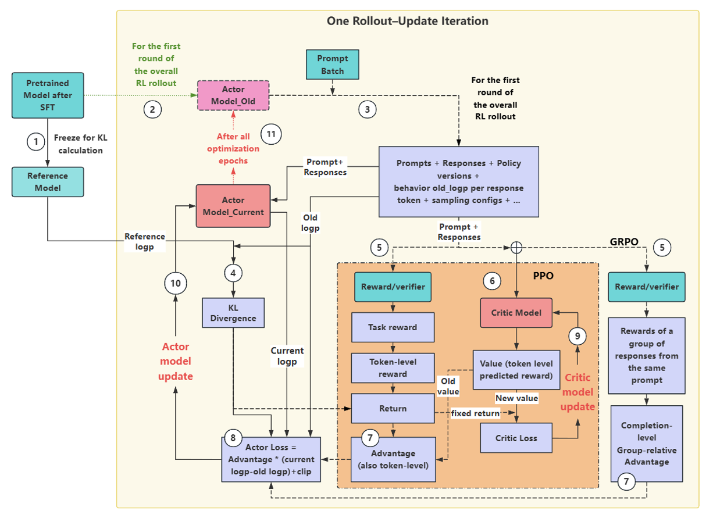

RLHF / RLVR · Training Pipeline
以 PPO 与 GRPO 两条管线的对比图为骨架，拆解大模型强化学习训练的完整流程——包括图没有画出来的前置阶段（SFT、Reward Model 训练）与外层循环。

rl-rollout-update-iteration.png，离线可用这张图在讲什么：它画的是大模型 RL 训练（RLHF / RLVR）中一次"采样—更新"迭代（one rollout–update iteration）的内部结构。左边的 SFT 模型是种子：冻结一份作为 Reference Model（用于算 KL 散度、防止策略跑偏），可训练的一份作为 Policy Model（被更新的对象）。策略对一批 prompt 做 Rollout 采样生成， Reward Model（或规则验证器）打分，随后 PPO 与 GRPO 在"如何估计优势（advantage）"这一点上分岔：PPO 额外训练一个 Value Model 逐 token 估计优势（GAE），GRPO 则不需要 Value Model——对同一 prompt 采样 $G$ 个回答，用组内相对排名当优势。最后两者都走 clip 型策略梯度 + KL 惩罚更新参数，同步回推理引擎，进入下一轮迭代。
一句话记住 PPO vs GRPO：PPO 用"一个learned的价值函数"当baseline，GRPO 用"同题其他样本的平均分"当baseline——后者把 Critic 从参数里挪到了数据里。
完整流程的 8 步速览（对应图中的编号，细节见 §3）：
| 步骤 | 做什么 | PPO 路线 | GRPO 路线 |
|---|---|---|---|
| ① | 冻结 SFT 模型副本 → Reference Model | 两者相同，KL 约束都依赖它 | |
| ② | SFT 模型初始化 Policy（可训练） | 还需要 Value Model（Critic） | 不需要任何额外模型 |
| ③ | Rollout：推理引擎批量生成回答 | 通常每 prompt 1 个回答 | 每 prompt 采样 $G$ 个回答 |
| ④ | 打分 | Reward Model 打分，或 RLVR 规则验证（答案比对/格式检查/单测） | |
| ⑤ | 估计优势 advantage | $V_\psi$ 回归 + GAE，逐 token | 组内归一化 $(r_i-\mathrm{mean})/\mathrm{std}$，序列级广播 |
| ⑥ | 计算损失 | clip 策略损失 + value 损失 + 熵奖励；KL 进 reward | clip 策略损失；KL 作为损失项（k3 估计） |
| ⑦ | Optimizer step 更新参数 | 更新 $\theta$ 和 $\psi$ | 只更新 $\theta$ |
| ⑧ | 权重同步回 rollout 引擎 → 下一轮 | 两者相同；外层循环直到奖励饱和 / 评测收敛 | |
原图标题是 "One Rollout–Update Iteration"，即它画的是训练主循环里的一圈。完整的 RL 训练流程其实是三层嵌套：
把三层都画出来，全景如下（橙色子图对应原图的 PPO 区域；GRPO 是它的"去 Critic"变体）：
flowchart TD
subgraph PRE["阶段 0 · 训练前准备（图外）"]
M0["预训练基座 LLM"] --> M1["SFT 指令微调"]
M1 -->|"① 冻结一份"| REF["Reference Model π_ref
只做前向，算 KL"]
M1 -->|"② 初始化，可训练"| POL["Policy Model π_θ
训练主角"]
M1 --> RM["Reward Model r_φ
RLVR 路线换成规则验证器"]
M1 --> VAL["Value Model V_ψ
只有 PPO 需要"]
end
subgraph ITER["外层循环 · 一次 Rollout–Update 迭代（图主体）"]
PROMPT["取一批 prompt
（数学题 / 指令 / 偏好数据）"]
ROLLOUT["③ Rollout 生成
vLLM / SGLang 推理引擎
连续采样 + KV cache"]
SCORE["④ 打分
RM 前向 or 规则验证"]
LOSS["⑥ 计算损失
clip 策略损失 + KL（± value 损失）"]
STEP["⑦ Optimizer Step
PPO 更新 θ 和 ψ；GRPO 只更新 θ"]
SYNC["⑧ 权重同步回 rollout 引擎"]
PROMPT --> ROLLOUT --> SCORE --> LOSS --> STEP --> SYNC
end
subgraph FIVE["⑤ 优势估计 · PPO 与 GRPO 分岔"]
direction LR
ADVPPO["PPO：V_ψ 前向 + GAE
逐 token 优势 Â_t"]
ADVGRPO["GRPO：同题 G 个回答
组内归一化当优势"]
end
POL --> ROLLOUT
SCORE --> FIVE
FIVE --> LOSS
REF -.->|"KL 散度"| LOSS
RM --> SCORE
VAL --> ADVPPO
SYNC -->|"下一轮"| PROMPT
STEP --> CKPT["监控 & Checkpoint
reward / length / KL / entropy / benchmark"]
读图关键：图中所有"模型框"（Reference、Policy、Reward、Value）都是同一套 Transformer 骨架的不同副本，区别只在谁被冻结、谁被训练、谁参与前向。RL 训练系统的显存与调度复杂度，本质就是"同时伺候这 4 个模型 + 1 个推理引擎"的工程问题。
一切从 Pretrained Model after SFT 出发。SFT 用指令数据做监督微调，让模型"会对话、会跟随指令"——RL 是在它之上做对齐或能力强化，而不是从零教起。直接对裸预训练模型做 RL（如 R1-Zero 实验）也可以，但需要基座本身有足够的指令跟随潜力。
RL 只有一个（往往稀疏且易被钻空子的）奖励信号。如果放任策略任意漂移，它会迅速找到奖励黑客（reward hacking）的捷径——比如生成格式正确但内容胡说的高分回答。解决办法是加 KL 惩罚：
$\pi_{\mathrm{ref}}$ 就是刚做完 SFT 的模型原样冻结（图中箭头 ① "Freeze for KL calculation"）。它永远不更新参数，每个训练 step 只跑前向，为的是给当前策略一个"别离 SFT 分布太远"的软约束。$\beta$ 越大，策略越保守。
图中箭头 ② 用 SFT 权重初始化 Policy Model $\pi_\theta$——这是唯一（GRPO 路线）或两个之一（PPO 路线）参数会被优化器更新的模型。它同时扮演两个角色：训练时算 logprob 与梯度，推理时作为 rollout 引擎的生成模型。
偏好对齐路线需要一个 RM：通常也用 SFT 模型初始化，把 LM head 换成标量 head，用人类偏好对 $(y^+ \succ y^-)$ 按 Bradley–Terry 目标训练：
现代推理模型训练（RLVR 路线）则经常跳过 RM：数学题答案可以直接比对、代码可以直接跑单测、格式可以用规则检查——奖励可验证、不可被黑，且零训练成本。
Value Model $V_\psi(s)$ 估计"从状态 $s$（即已生成前缀 $x, y_{<t}$）出发，期望能拿多少奖励"。它通常从 Policy 或 RM 初始化，参数与 Policy 一起被训练。它的存在只为了一件事：给策略梯度当 baseline，把"绝对好不好"变成"比预期好不好"（即优势），从而大幅降低梯度方差。GRPO 的全部动机，就是把这一个模型从系统里删掉。
| 模型 | 初始化自 | 参数是否更新 | PPO | GRPO | 作用 |
|---|---|---|---|---|---|
| Policy $\pi_\theta$ | SFT 模型 | ✅ 更新 | ✅ | ✅ | 被优化的策略，负责生成 |
| Reference $\pi_{\mathrm{ref}}$ | SFT 模型 | ❄️ 冻结 | ✅ | ✅ | 算 KL，防止漂移/奖励黑客 |
| Reward $r_\varphi$ / 规则器 | SFT 模型 / 无 | ❄️ 冻结 | ✅（或 RLVR） | ✅（或 RLVR） | 给整条回答打分 |
| Value $V_\psi$ | Policy / RM | ✅ 更新 | ✅ | ❌ 不存在 | 逐 token baseline，算优势 |
从训练集取一批 prompt（如几百到几千道数学题），交给推理引擎（vLLM / SGLang）做连续采样生成：温度采样（典型 $T=1.0$，DAPO 场景常用较高温度保探索）、top-p 截断、最大长度截断（超长样本的处理见 §6 DAPO）。引擎内部靠 KV cache 与批调度把吞吐拉满——rollout 通常占整个 RL 训练时间的一半以上，是第一性能瓶颈（这正是 MTP / 投机解码被用来加速 rollout 的原因）。
关键分歧：采样温度与 top-p 使每次生成带随机性；GRPO 显式利用这一点——同一 prompt 采 $G$ 个不同回答（典型 $G=8\sim16$）；PPO 经典配置每 prompt 采 1 个，随机性靠大批量 prompt 提供。
生成结束后，这批数据的 $\log\pi_{\mathrm{old}}(y_t \mid \cdot)$ 被记录下来——它是后面重要性比值 $\rho_t$ 的分母。之后引擎挂起（sleep）或释放显存，把 GPU 让给训练阶段。
对每条完整回答给一个（通常标量、通常稀疏的）奖励 $r_i = r(x, y_i)$：
注意这里的奖励是结果奖励（outcome reward）：只在整条回答结束时给出，不含过程信号。把分数摊到每个 token 上、告诉模型"哪一步立了功"，是下一步优势估计的任务。
先把稀疏的序列奖励改造成逐 token 奖励。InstructGPT 的做法是把 KL 惩罚按 token 注入 reward（KL 进 reward 的 shaping 方式）：
然后 Value Model 前向给出每个前缀的价值 $V_\psi(s_t)$，按 GAE（广义优势估计）算逐 token 优势：
直觉：$\delta_t$ 是"实际拿到的比预期多的"，$\hat{A}_t$ 是它沿时间轴的指数加权平滑。$\lambda{=}1$ 退化为蒙特卡洛回报减 baseline，$\lambda{=}0$ 退化为纯 TD。价值函数本身的误差则由 value loss（见 ⑥）在每步同步纠正——Critic 是被训练出来的 baseline。
flowchart LR
Q["同一个 prompt q"] --> O1["y_1 → r_1 = 1"]
Q --> O2["y_2 → r_2 = 0"]
Q --> O3["y_3 → r_3 = 1"]
Q --> O4["y_4 → r_4 = 0"]
O1 & O2 & O3 & O4 --> N["组内归一化
 = (r − mean) / std
mean=0.5, std≈0.58"]
N --> B1["y_1, y_3：Â ≈ +0.87 → 抬高概率"]
N --> B2["y_2, y_4：Â ≈ −0.87 → 压低概率"]
同一 prompt 的 $G$ 个回答互为 baseline：高于组均值的被强化、低于组均值的被抑制，序列级优势广播到该回答的每个 token。代价是每个 prompt 要生成 $G$ 倍 token；换来的是省掉一整个可训练模型及其优化器状态。
边界情形：若一组内 $G$ 个回答全对或全错（$r_j$ 全相等），$\hat{A}_i = 0$，这批样本不产生梯度——DAPO 的 dynamic sampling 正是对此的修补（§6）。
两条路线的起点都是策略梯度定理：
纯 on-policy 单步更新太浪费数据，实践中会把这批 rollout 切成 mini-batch 跑 1~4 个 epoch——此时策略已偏离采样分布，需要重要性采样比值修正，并加 clip 防止单步更新过猛：
KL 约束按 §5 的方式藏在逐 token reward 里（reward shaping）；$c_v, c_e$ 是价值损失系数与熵系数，$\hat{R}_t$ 是 GAE 用的回报目标（$\hat{A}_t + V_\psi(s_t)$）。
其中 KL 用 Schulman 的 k3 无偏估计（直接进损失，而非进 reward）：
反向传播 + Adam(W) 走一步（或几步）：PPO 同时更新 $\theta$（policy）与 $\psi$（value）；GRPO 只更新 $\theta$。工程细节：
把更新后的 $\theta$（重分片、重加载）同步回 rollout 引擎，唤醒引擎（wake），取下一批 prompt——回到步骤 ③。这就是图名"one rollout–update iteration"的完整一圈。外层循环跑成百上千步，直到：奖励曲线饱和、验证 benchmark 不再涨、KL 超预算或 entropy 坍缩触发早停。期间持续存 checkpoint，用独立评测（不要用训练 reward）选最终模型。
| 维度 | PPO | GRPO |
|---|---|---|
| baseline 来源 | learned Value Model（额外训练一个 Critic） | 同题 $G$ 个样本的组均值（数据即 baseline） |
| 优势粒度 | 逐 token（$\lambda$ 在偏差/方差间调节） | 序列级，广播到所有 token |
| 模型数（训练态） | 4 个：policy、reference、reward、value | 3 个：policy、reference、reward（RLVR 可至 2 个） |
| 额外优化器状态 | policy + value 两套 | policy 一套 |
| KL 注入方式 | 常做 reward shaping（进逐 token reward） | 损失项（k3 估计，样本级） |
| 采样成本 | 每 prompt 通常 1 条 | 每 prompt $G$ 条（生成量 ×G） |
| 信号密度 | Critic 逐 token 打分，信号更细 | 组内对比，实现简单、信号稳健 |
| 典型场景 | 偏好对齐（RM 打分、开放任务） | 可验证任务：数学 / 代码（RLVR 主力） |
| 代表工作 | PPO (2017)、InstructGPT (2022) | DeepSeekMath (2024)、DeepSeek-R1 (2025) |
一句话权衡：GRPO 用"$G$ 倍生成"换"省一整个可训练模型"。在奖励可验证、显存紧张、工程求简的推理训练场景，这笔账几乎总是划算的——这也是 2025 年后开源 RL 事实标准是 GRPO 系而非 PPO 的原因。
| reward shaping（InstructGPT/PPO 常用） | 损失项（DeepSeekMath/GRPO） | |
|---|---|---|
| 形式 | $r_t$ 中每步减去 $\beta\,\log\frac{\pi_\theta}{\pi_{\mathrm{ref}}}$ | 目标函数直接减 $\beta D_{\mathrm{KL}}$（k3 估计） |
| 影响路径 | 改变优势 $\hat{A}$，间接约束策略 | 直接对 logprob 加惩罚梯度 |
| 观感 | KL 会体现在训练奖励里（训练 reward ≠ 任务奖励） | 任务奖励干净，KL 单独成曲线 |
两者都实现"软贴住 $\pi_{\mathrm{ref}}$"，差别在梯度路径与日志解读，强度都由 $\beta$ 控制。
rollout 刚结束、第一份 mini-batch 上 $\pi_\theta = \pi_{\mathrm{old}}$，$\rho_t = 1$，clip 不起作用；从第二份 mini-batch / 第二个 epoch 起，$\theta$ 已被更新，$\rho_t \ne 1$，clip 开始保护。所以"PPO/GRPO 是 on-policy 算法 + 小幅重要性修正"更准确；若 rollout 与训练之间还有队列延迟（异步系统），$\rho_t$ 会系统性偏离 1，需要更保守的 $\epsilon$ 或 resample 修正。
| 工作 | 对图中流程改了什么 |
|---|---|
| PPO（2017） | 原始 RL 算法：clip + value + GAE，先于 LLM 时代。 |
| InstructGPT / RLHF（2022） | 把 PPO 搬进 LLM：三阶段范式（SFT → RM → RL），KL 进 reward。 |
| DPO（2023） | 整段删掉 ⑤⑥⑦⑧：把 RL 目标闭式解成 SFT 式的偏好损失，只要 policy + reference 两个模型、直接离线训练。 |
| DeepSeekMath / GRPO（2024） | 删 Value Model，组内归一化当优势（本图右路）。 |
| DeepSeek-R1（2025） | RLVR 大规模验证：规则奖励 + GRPO 训出推理长链，纯 RL（R1-Zero）即可涌现反思与验证行为。 |
| Dr. GRPO（2025） | 指出除以 std 引入长度相关偏差：去掉 $\operatorname{std}$ 与长度归一化项，改"固定常数"分母。 |
| DAPO（2025） | 四件套改造 GRPO：clip-higher（低概率 token 用更宽的 $\epsilon_{\mathrm{high}}$，防熵过快坍缩）、dynamic sampling（过滤全对/全错的零优势组，补采新样本）、token-level loss（按 batch 总 token 数而非序列数归一，长回答不被降权）、overlong filtering（超长截断样本奖励置 mask，不惩罚"只是没写完"的样本）。 |
| GSPO（2025） | 把重要性比值从 token 级换成序列级（对整条序列的 logprob 归一），训练更稳。 |
| MTP rollout（2025+） | 不改算法，改 ③：rollout 阶段用 multi-token prediction 每步出多 token，加速生成瓶颈（正是 Qwen + DAPO + MTP 评测所针对的方向）。 |
注：2025 年及之后的 arXiv 编号（DAPO、Dr. GRPO、GSPO 等）均为预印本，虽已被社区广泛复用，关键结论仍建议以自行复现为准。
§7 讲的是引擎；真正上手训练时，入口是 veRL 的两个官方配方库：verl-recipe（GPU 主线，作为 git submodule 挂在 verl/recipe）与 verl-ascend-recipe（华为昇腾 NPU 专用线，复制进 verl/verl_ascend_recipe）。每个配方（recipe）= 算法 + 模型 + 数据 + 奖励函数 + 超参 + 启动脚本的完整打包，目标是照着 README 就能复现论文或跑起自己的任务。
flowchart LR
CORE["verl 主仓库
RL 训练引擎
FSDP / Megatron / vLLM / SGLang"]
CORE -->|"git submodule: verl/recipe"| GPU["verl-recipe
GPU 主线配方库"]
CORE -->|"复制进 verl_ascend_recipe/"| NPU["verl-ascend-recipe
昇腾 NPU 配方库"]
GPU --> R["每个配方目录：
算法 + 数据 + 奖励函数 + 超参 + 启动脚本"]
NPU --> R
R --> PIN["REQUIRED_VERL.txt 钉死引擎版本
install_verl.sh 一键安装对应 verl"]
两个仓库共用同一套版本钉死设计——这是 RL 复现性的关键，因为训练结果对引擎版本极端敏感（veRL、torch、vLLM 差一个小版本，reward 曲线就可能漂移）：
REQUIRED_VERL.txt：声明该配方依赖的 verl 版本，支持固定 release（verl==0.6.0）、固定 commit，或 rolling 跟随 main 并同时记录三个精确 commit（VERL_COMMIT、RECIPE_SUBMODULE_COMMIT、RECIPE_FOLDER_LAST_COMMIT），任何漂移都可追溯。install_verl.sh 一键安装匹配版本：--list 列配方、--show 干跑、--recipe NAME 指定配方（可加 --option VARIANT 选变体）、--method pip|git 选安装方式。REQUIRED_VERL.txt，配合 pre-commit + ruff 做风格检查。# GPU 主线：verl-recipe 作为 submodule 已经在 verl/recipe 下
bash verl/recipe/install_verl.sh --list # 列出全部配方
bash verl/recipe/install_verl.sh --recipe dapo --option reproduction
# 昇腾线：先复制进主仓库再装
git clone https://github.com/verl-project/verl.git
git clone https://github.com/verl-project/verl-ascend-recipe.git
mkdir -p verl/verl_ascend_recipe && cp -r verl-ascend-recipe/* verl/verl_ascend_recipe
./install_verl.sh --recipe dapo --option reproduction按对本文 8 步流程改了哪里来分类（31 个配方，标注"推断"的仅从命名判断、未逐一核实）：
| 类别 | 配方 | 改造点 |
|---|---|---|
| RLVR / 推理复现 | r1、open_math_reasoning、dapo | §6 演进线的官方落地：r1 复现 R1-Zero 式 RLVR；dapo 的 --option reproduction 直接对齐论文实验 |
| 算法变体（改 ⑤⑥） | gvpo、spin、spo、entropy、prime，以及 fapo/flowrl/rep_exp/sppo/speRL 等（仅列名） | 换优势估计或损失形式；entropy 专攻熵管理（对抗 §6 的 entropy 坍缩）；prime 用隐式过程奖励细化 ④→⑤ 的信号 |
| Agent / 多轮 / 工具（改 ③） | retool、langgraph_agent、swe_agent、infigui-g1（推断） | rollout 从"一次生成"变成"多轮交互"：ReTool 在 rollout 里调代码解释器；langgraph_agent 用 LangGraph ReactAgent 做多轮 rollout；swe_agent 跑 SWE-bench 软件工程任务 |
| 多模态 | deepeyes、minicpmo | 把 ③ 的生成与 ④ 的奖励扩展到图像输入 |
| 工程与系统（改 ③⑦⑧） | partial_rollout、fault_recover、genrm_remote、dynamo、qat、gkd/megatron、nemo_gym、verl_tinker、char_count | partial_rollout 跨 step 断点续采（APRIL 式），直接回收 ③ 的长尾 GPU 气泡；genrm_remote 把步骤 ④ 的 RM 变成远程生成式服务；qat 量化感知训练；verl_tinker 把 veRL actor 暴露成 Tinker 兼容 HTTP 服务；char_count 是入门玩具示例 |
面向华为昇腾硬件（如 Ascend 950）与 MindSpeed 生态的配方集，机制与 GPU 线完全一致；部分配方跨库互现（r1_ascend、flash_rl_ascend、retool、fault_recover 两边都有）。它最有价值的部分是把 §7 的工程问题做成了现成配方：
| 配方 | 作用 | 对应本文位置 |
|---|---|---|
baseline / grpo / dapo / dppo / reinforce_plus_plus / opd | 主流算法在昇腾上的基线实现 | ⑤⑥ 算法层 |
true_on_policy | 严格 on-policy 训练（每个 mini-batch 用最新权重重算） | §5.2 的 $\rho_t = 1$ 极端形态 |
pd_disaggregation | Prefill/Decode 分离部署的官方配方 | §7 disaggregate 布局的落地 |
rollout_elastic / fault_recover | 弹性 rollout 与容错恢复 | ③⑧ 的长稳训练保障 |
drkernel / triton_kernel_generation/sft | 内核优化与内核生成 | 引擎底层 |
low_precision/Qwen3-30B-A3B | 低精度训练配方 | ⑦ 的精度工程 |
Ascend_950 / DeepSeek-V4-Flash / GLM5 | 新硬件与新模型适配 | 阶段 0 的模型准备 |
grpo_mindspeed_mm | MindSpeed 多模态 GRPO | ③④ 扩展到多模态 |
dapo_predictor | 带预测器（predictor）的 DAPO——rollout 加速方向，与 §6 的 MTP rollout 同族思路（命名推断） | ③ 的生成加速 |
uniagent / small_for_large | Agent 场景 / 小模型带动大模型（命名推断，仅列名） | — |
install_verl.sh --list 看全景；复现论文选对应配方 + --option reproduction；自研任务从 baseline / grpo / char_count 这类最小配方改起，只动奖励函数与数据，不动引擎。| 术语 | 含义 |
|---|---|
| Rollout | 当前策略对一批 prompt 实际生成回答的过程（推理阶段）。 |
| Policy / Reference / Value / Reward | 四个模型副本：被训练的 / 冻结算 KL 的 / 逐 token 估价值的（仅 PPO）/ 打分的。 |
| Advantage $\hat{A}$ | "实际所得 − baseline"，策略梯度的核心量：正则抬高该 token 概率，负则压低。 |
| GAE | 广义优势估计，逐 token 优势的偏差—方差折中（$\gamma,\lambda$）。 |
| on-policy / 重要性比值 $\rho_t$ | 数据是否由当前策略采得；mini-epoch 复用数据后靠 $\rho_t$ 修正，clip 限制修正幅度。 |
| RLVR | Reinforcement Learning with Verifiable Rewards：规则可验证奖励替代 RM。 |
| Reward hacking | 策略钻奖励函数空子拿高分（胡说但格式满分），KL 与 RLVR 都是解法。 |
| Entropy 坍缩 | 探索性丧失、输出模式单一；DAPO clip-higher、熵奖励都是对抗手段。 |
| Hybrid engine | 同一组权重在推理引擎与训练框架间切换并同步的机制（veRL sleep/wake）。 |
| MTP rollout | 用 multi-token prediction 在 rollout 阶段一步生成多 token，加速生成。 |
verl/recipe）。verl/verl_ascend_recipe 使用。本文档基于 "One Rollout–Update Iteration"（PPO vs GRPO）示意图拆解整理，2026-10-21。